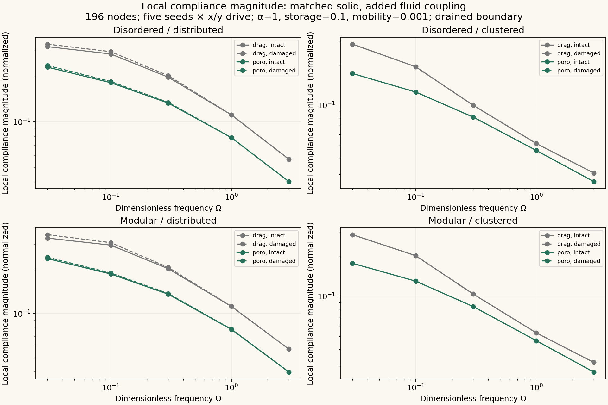
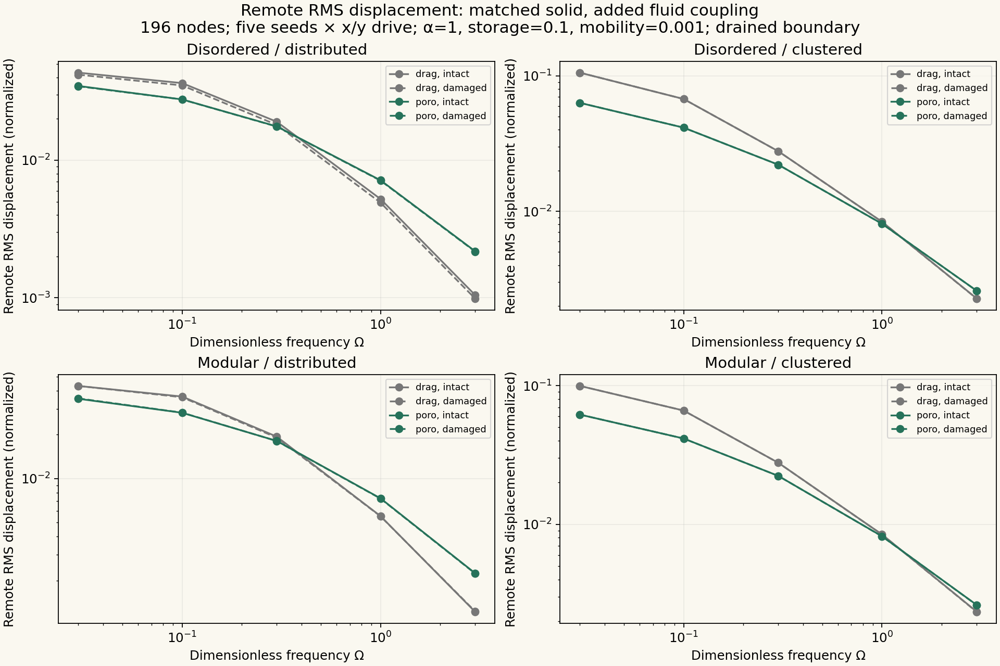
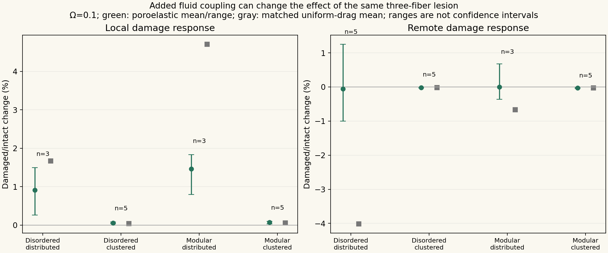
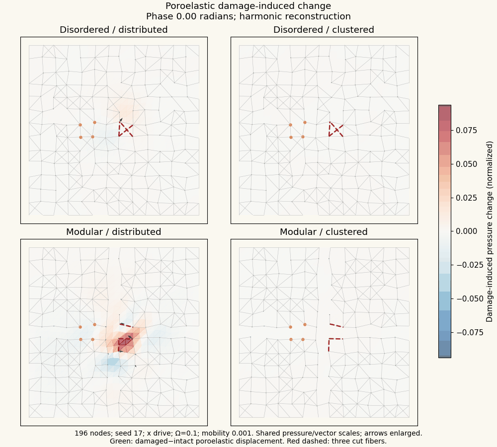

Fracture Atlas · Uniform-drag experiment · WordPress article
What changes when collagen motion also moves fluid?
An exact matched comparison: the same discrete collagen skeleton, local three-fiber lesion, virtual probe and background drag, with and without a FEniCSx pressure/Darcy-flow field.
This is a hybrid discrete-solid/Biot-fluid calculation. FEniCSx assembles the finite-element fluid and divergence operators; SciPy solves the coupled complex systems. It is a normalized hypothesis test, without a calibrated tissue time scale or permeability.
What this run shows
At Ω=0.1 and low mobility, the mean remote change for disordered distributed-link networks shifts from −4.018% with uniform drag to −0.052% with fluid coupling (all five seeds qualified). Individual poroelastic seed means span −1.002% to +1.253%, so the direction is not uniform. At mobility 0.1, the same mean is −4.094%, close to the drag value. Clustered-link damage responses remain small for this lesion near the cluster. Several distributed-link local and modular remote comparisons qualify only three of five seeds; the table retains that limitation.
Intact versus damaged frequency response
196 nodes, five seeds and two drive directions. The line plots show all algebraically resolved fine-pressure-mesh responses at mobility 0.001. Mesh qualification is evaluated separately below; a small solver residual alone does not establish mesh convergence.

Local compliance: displacement of the driven four-node region per unit total force. Green includes fluid coupling; gray uses uniform drag. Dashed curves follow the local cut.
Remote response uses free nodes at least 0.6 normalized distance from the drive centroid, with the same receivers before and after damage.Does the local lesion change the answer?

Only seed means with both directions passing the stated mesh tests enter these points. Whiskers show the observed seed range, not a confidence interval. Ω = 0.1. Change = 100 × (damaged / intact − 1).| Architecture / links | Observable | Fluid-coupled mean [seed range] | Matched uniform-drag mean | Qualified seeds / 5 |
|---|
Qualification requires both response magnitudes to change by at most 5% under pressure-mesh refinement and the damaged/intact ratio to change by at most 0.5 percentage points. Each seed must pass for both x and y drive. “No qualified seeds” means that this comparison remains unresolved at these meshes.
Watch displacement and pressure
Example seed 17, 196 nodes, x drive, Ω = 0.1 and mobility 0.001. Background color: pressure (red positive, blue negative); green arrows: poroelastic displacement. Gray arrows in the first view: matched uniform drag. Orange dots: probe; dashed red fibers: the local cut. Shared scales across all four panels within each view, with arrows enlarged for visibility. Phase playback reconstructs solved harmonic phasors; it does not simulate progressive rupture.
Downloadable animations
Fluid versus drag GIF · Damage-induced change GIF

What is held fixed?
The two architectures are disordered and modular. Each has either distributed or clustered effective crosslinks, with 67 links at 100 nodes and 131 links at 196 nodes. Five matched seeds are 17, 29, 43, 67 and 83. The same three original collagen fibers nearest (0.55L, 0.50L) are cut; no added link is cut. A virtual four-node force/readout region lies near (0.35L, 0.50L). Solid perimeter nodes are clamped and fluid pressure is drained to zero along the entire perimeter.
Storage is 0.1, coupling is 1, and the two dimensionless fluid mobilities are 0.001 and 0.1. The original nodal drag remains present in both models. Permeability is held fixed across the cut: this isolates the solid lesion and does not model a tear opening a new hydraulic channel. The two pressure meshes refine fluid resolution while retaining exactly the same solid degrees of freedom.
Scope and reproducibility
A central lesion near the cluster tests one damage location. These results do not establish a universal ranking of crosslink patterns, age effects, species differences, a continuum limit or a measured long-range decay law. No rigid bead, optical trap, thermal motion or physical frequency calibration is included. The pressure field is a continuum coupled to the network, rather than explicit solvent resolved between individual fibers.
Methods and limits · Validation checks · All paired comparisons (CSV) · All solved responses · Summary values · Source, inputs, provenance and archives